Revue produit - 20 juillet 2026
Le cockpit qui aide une compagnie à savoir quoi faire.
Tour des interfaces, de la première visite au pilotage quotidien.
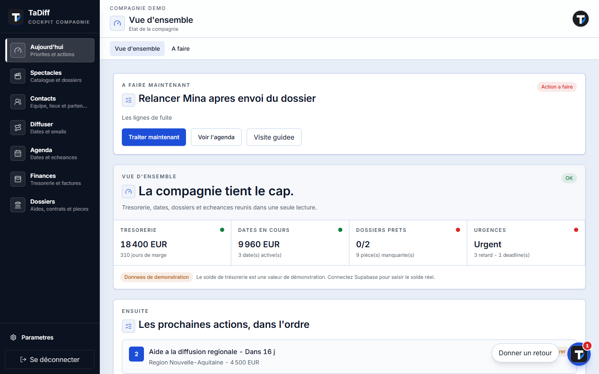
01 - Découvrir
Une promesse immédiatement lisible
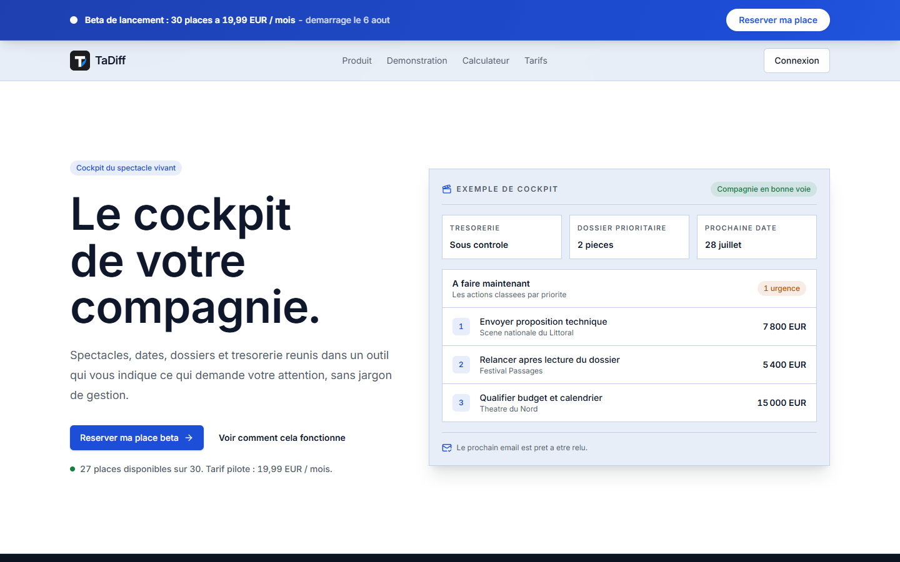
À quoi sert cette page ?
Présenter TaDiff comme un cockpit de compagnie, avec une promesse centrée sur le métier et non sur la technologie.
Comment l’utiliser ?
- Comprendre la proposition
- Voir un aperçu du cockpit
- Réserver une place bêta
Ce qu’elle doit provoquer
Le visiteur doit se reconnaître dans ses difficultés avant même de créer un compte.
02 - Rejoindre
Une entrée bêta volontairement limitée
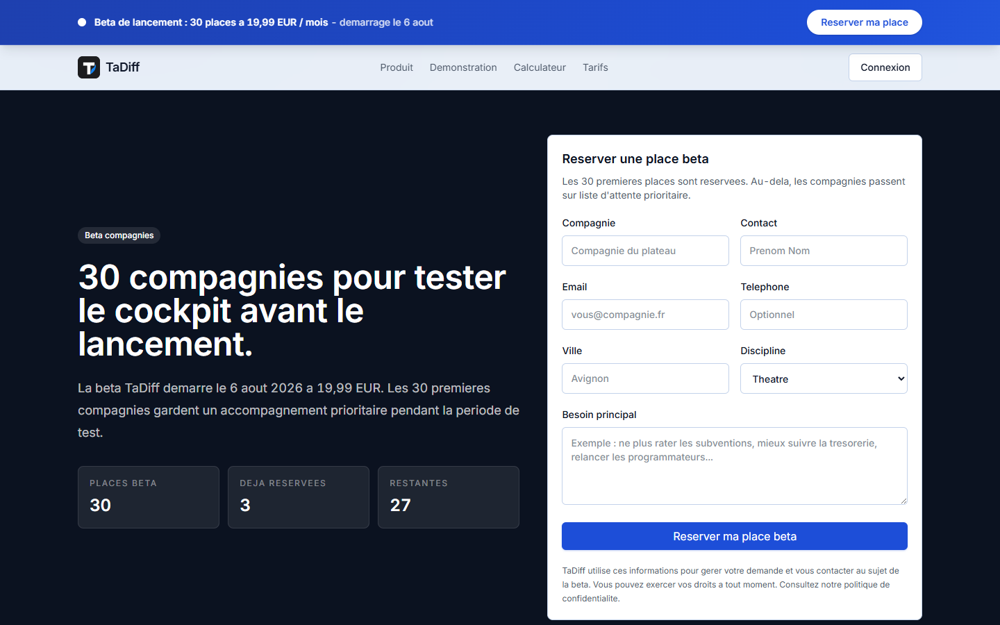
Objectif
Qualifier les premières compagnies et recueillir leurs besoins avant l’ouverture générale.
Parcours
- Renseigner ses coordonnées
- Choisir sa discipline
- Décrire son besoin principal
Positionnement
30 places à 19,99 EUR par mois, avec un accompagnement rapproché pendant la phase de test.
03 - Piloter
Le cockpit : l’écran du matin
Une seule question
« Qu’est-ce que je dois faire maintenant pour que ma compagnie avance ? »
Lecture
- Traiter la priorité du jour
- Contrôler trésorerie et dates
- Voir les dossiers et échéances
Ce que cela remplace
Les tableaux éparpillés, les rappels mentaux et la recherche d’informations dans plusieurs outils.
04 - Être accompagné
William donne un cap, puis un chemin
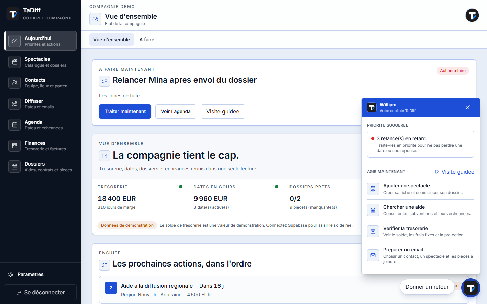
Rôle
Répondre aux questions et relier chaque recommandation à l’état réel de la compagnie.
Exemple
- Demander quoi faire
- Recevoir trois priorités maximum
- Ouvrir directement la bonne page
Architecture
Données fraîches du compte pour piloter, RAG documentaire pour expliquer les aides, règles et dossiers.
05 - Produire
Les spectacles comme un jeu de fiches
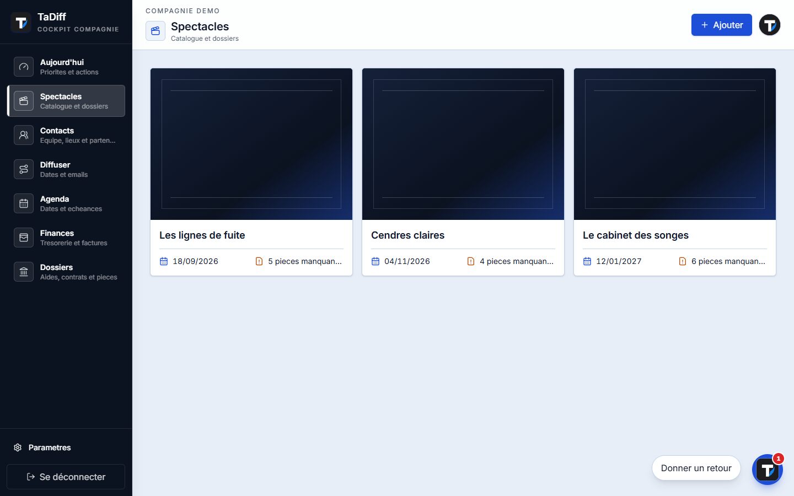
Vue immédiate
L’affiche, le titre, la prochaine représentation et le nombre de pièces manquantes suffisent pour choisir où agir.
Actions
- Cliquer pour ouvrir
- Ajouter depuis le bouton +
- Clic droit pour modifier ou supprimer
Principe
Chaque spectacle devient le point d’entrée vers son dossier, sa diffusion, son budget et sa présentation.
06 - Centraliser
Une fiche unique par spectacle
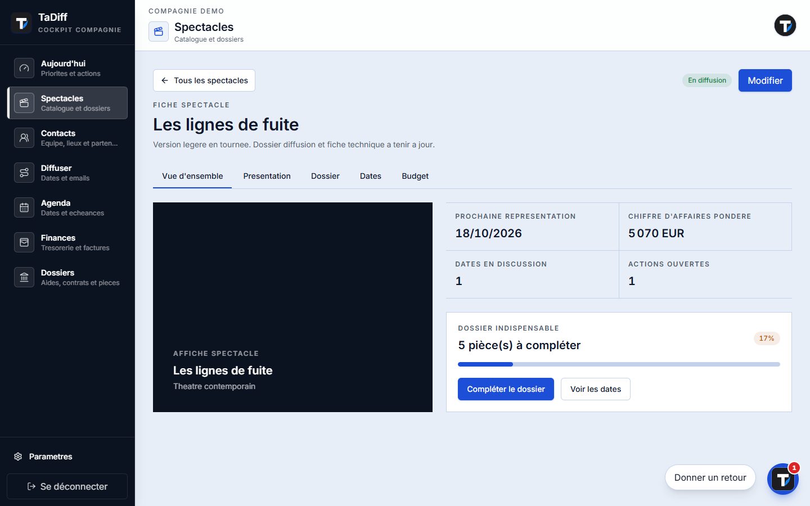
Vue d’ensemble
Affiche, prochaine représentation, chiffre d’affaires potentiel et état du dossier sont réunis.
Navigation
- Présentation commerciale
- Dossier de diffusion
- Dates et budget
Résultat
La compagnie ne cherche plus quelle version d’un document ou quel tableau correspond au spectacle.
07 - Être prêt
Le dossier indique exactement ce qui manque
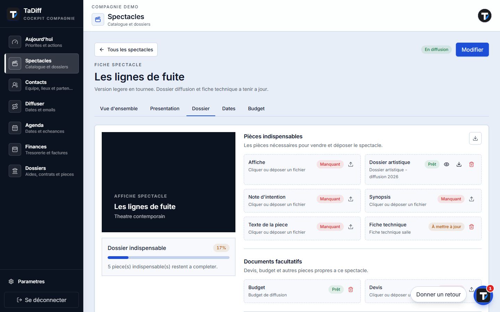
Pièces suivies
Affiche, dossier artistique, note d’intention, synopsis, texte et fiche technique.
Utilisation
- Déposer un ou plusieurs fichiers
- Prévisualiser ou télécharger
- Remplacer une ancienne version
Automatisation
TaDiff reconnaît le type probable du fichier et prépare le dossier à transmettre ou déposer.
08 - Comprendre les chiffres
Un budget progressif, pas un tableur imposé
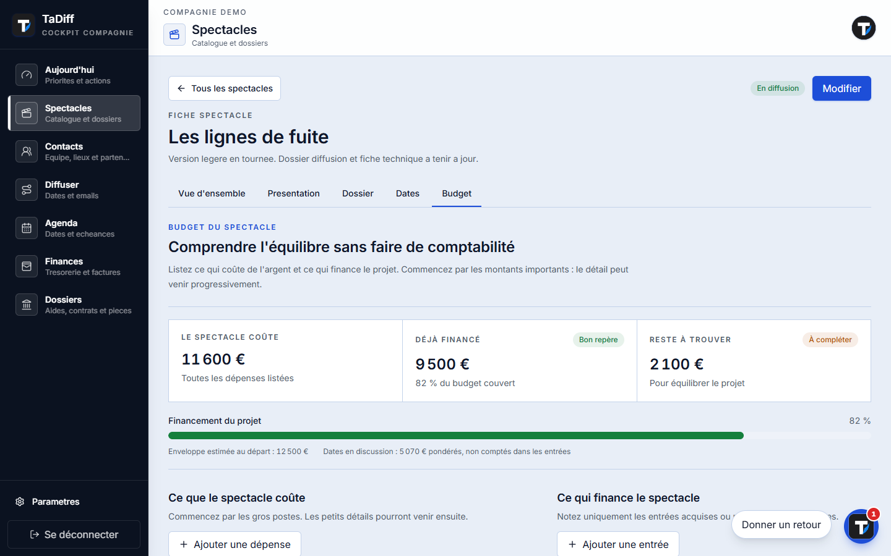
Deux niveaux
Une lecture simple pour commencer, puis un budget détaillé facultatif pour les compagnies qui en ont besoin.
Construction
- Lister les dépenses de création
- Ajouter les financements acquis
- Voir ce qu’il reste à trouver
Lecture métier
Scénographie, répétitions rémunérées, technique, production et recettes sont expliquées sans jargon comptable.
09 - Avancer
Une feuille de route rattachée aux spectacles
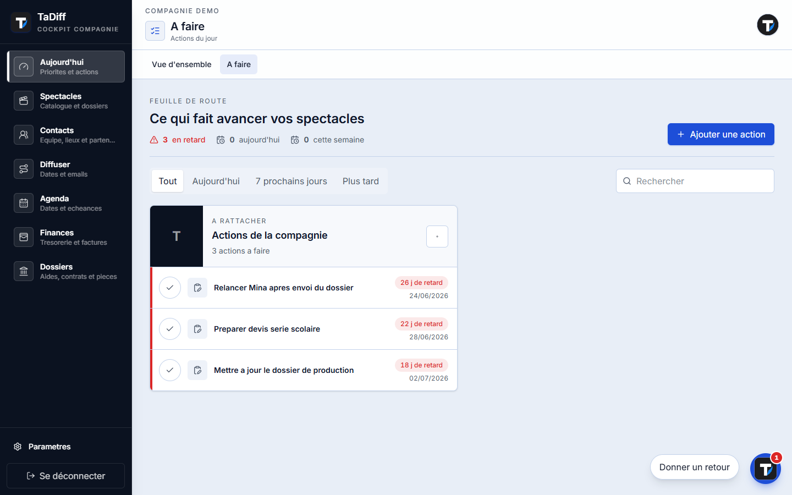
Organisation
Les actions sont regroupées par spectacle, avec une zone séparée pour les tâches générales de la compagnie.
En quelques secondes
- Choisir le spectacle par son affiche
- Sélectionner une action rapide
- Fixer aujourd’hui, demain ou une date
Lisibilité
Retard, aujourd’hui, sept prochains jours et plus tard : on voit immédiatement l’ordre de traitement.
10 - Entretenir les relations
Un carnet de contacts, pas un CRM opaque
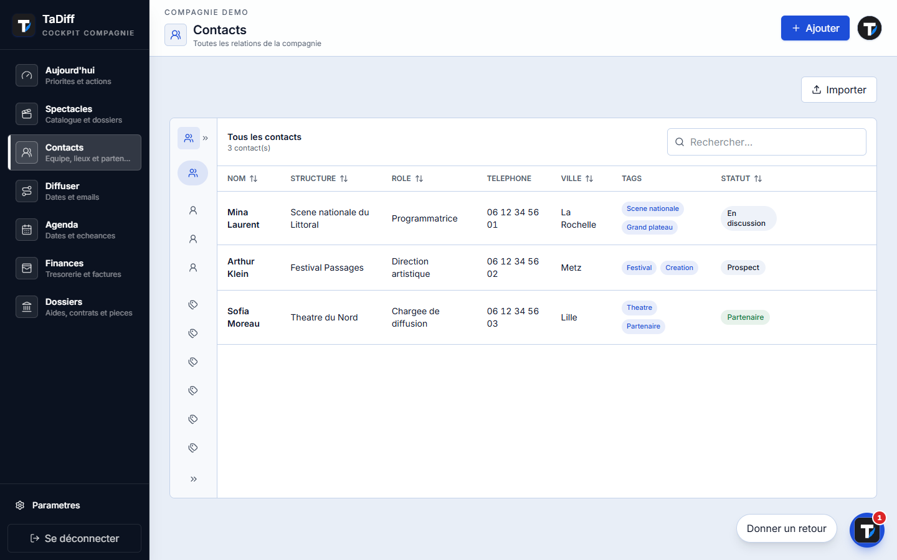
Tous les interlocuteurs
Programmateurs, lieux, équipes, partenaires, prestataires et mécènes peuvent cohabiter dans le même carnet.
Actions
- Importer et mapper un fichier Excel
- Filtrer par rôle ou catégorie
- Préparer un email ou une action
Souplesse
Les tags sont personnalisables et la fiche peut être modifiée sans quitter le carnet.
11 - Diffuser
Suivre toutes les formes d’exploitation
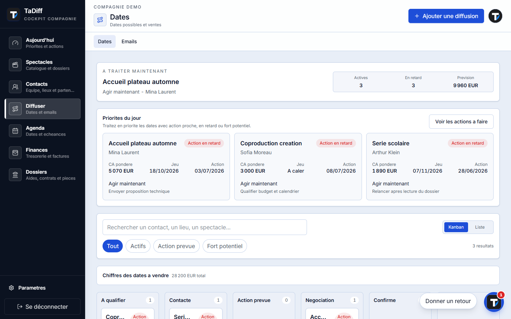
Au-delà de la cession
Vente de date, coréalisation avec partage de recettes, minimum garanti ou location de lieu.
Parcours
- Choisir contact et spectacle
- Choisir le modèle économique
- Laisser William proposer l’action suivante
Décision
Le revenu estimé est calculé selon le montage réel, sans demander une fausse « chance d’aboutir ».
12 - Écrire
Préparer des emails personnalisés sans repartir de zéro
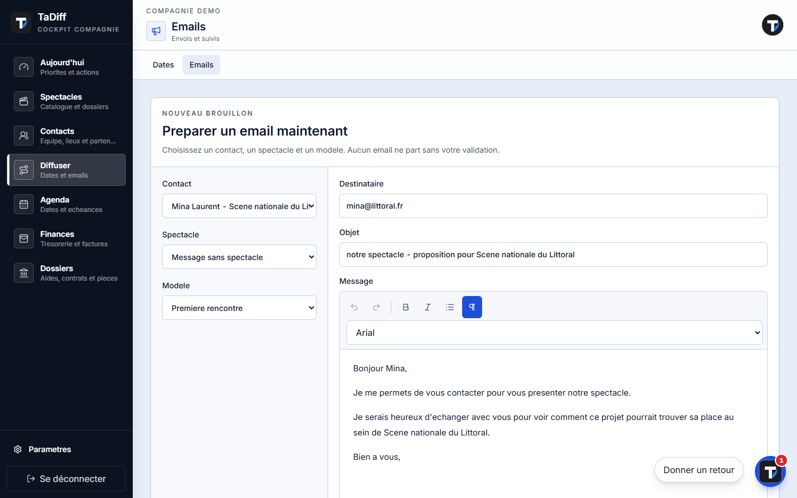
Contexte automatique
Le contact, le spectacle, la logline, les thèmes et la structure d’accueil alimentent le brouillon.
Validation humaine
- Choisir un modèle
- Relire et ajuster le message
- Ouvrir Gmail ou Outlook
Documents
Les pièces disponibles peuvent être sélectionnées et téléchargées ensemble avant l’envoi.
13 - Planifier
Un seul agenda pour toutes les échéances
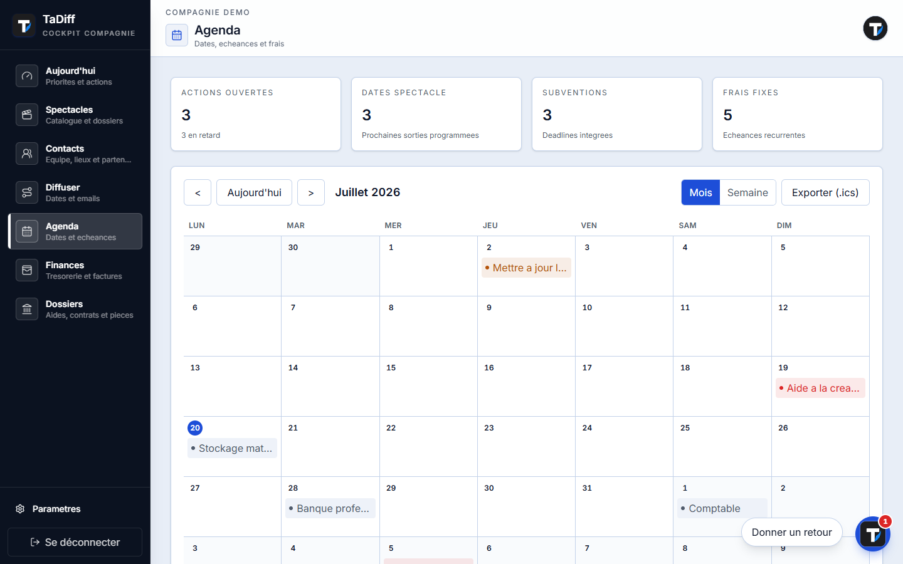
Ce qui remonte
Représentations, relances, subventions, frais fixes et événements internes.
Lecture
- Filtrer par type d’échéance
- Repérer les urgences
- Ouvrir l’élément concerné
Prochaine évolution
Une vraie vue mois et semaine, puis synchronisation avec les calendriers externes.
14 - Financer
Subventions et mécénat, deux parcours distincts
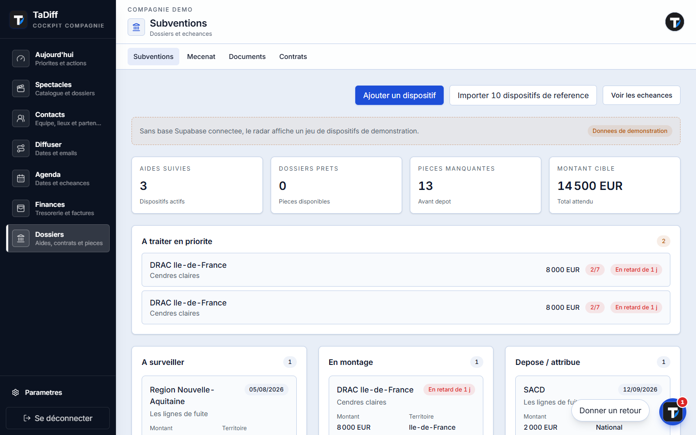
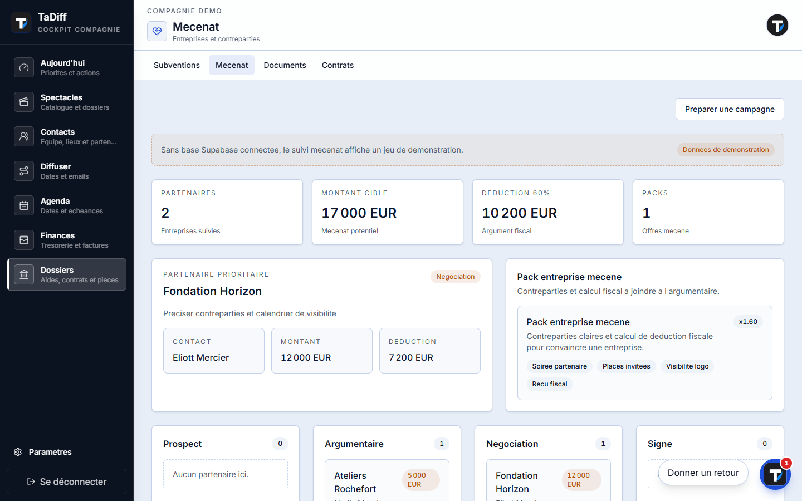
Radar
Mettre en avant les dispositifs pertinents selon la compagnie et ses spectacles.
Parcours
- Examiner l’opportunité
- Contrôler les pièces
- Télécharger le dossier prêt
Avec William
Expliquer l’aide, comparer les critères et préparer une checklist de dépôt.
15 - Anticiper
Des finances expliquées en langage courant
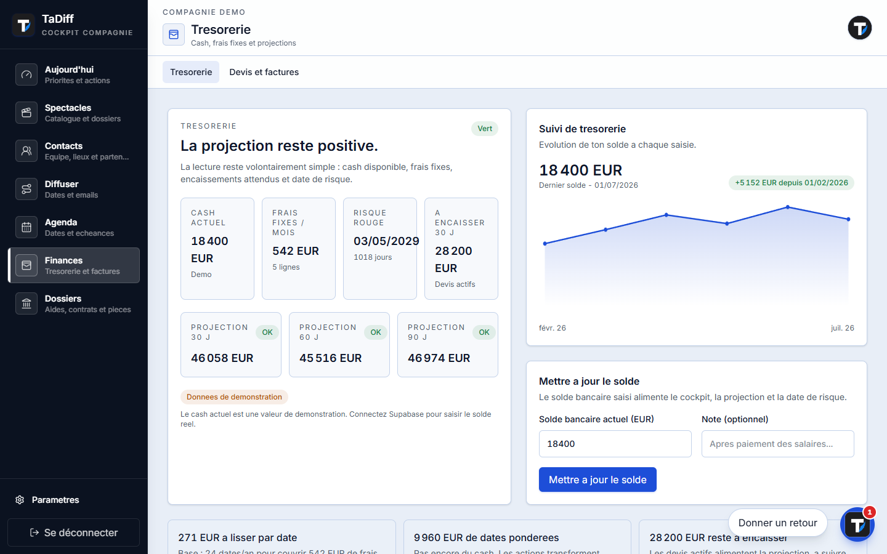
Les réponses attendues
Combien avons-nous ? Que va-t-il sortir ? Quand risquons-nous de passer dans le rouge ?
À renseigner
- Solde de trésorerie
- Frais fixes récurrents
- Recettes et devis attendus
Projection
TaDiff lisse les coûts de structure et aide à vérifier la rentabilité d’une date avant signature.
16 - Administrer
Documents, facturation et réglages restent reliés
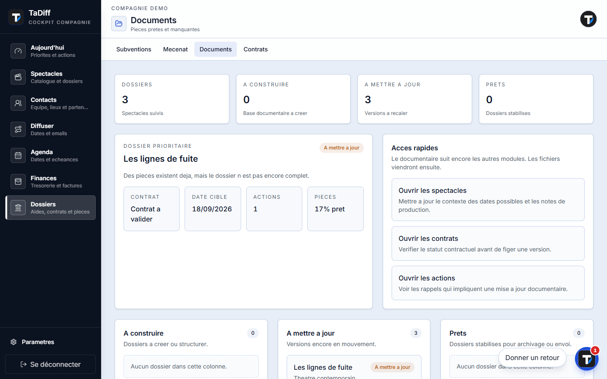
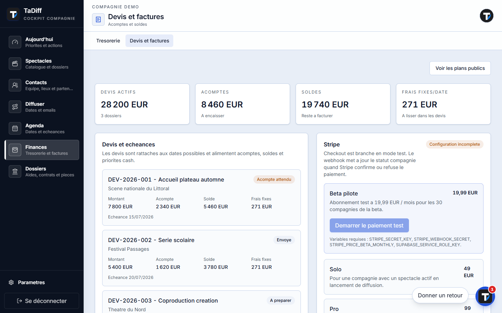
Une même donnée
Le RIB ou les statuts sont déposés une fois au niveau de la compagnie, puis réutilisés dans les dossiers.
Continuité
- Préparer un devis
- Suivre acompte et solde
- Projeter l’entrée en trésorerie
Objectif
Éviter les doubles saisies entre production, administration et pilotage financier.
17 - Configurer
La compagnie garde la maîtrise de son espace
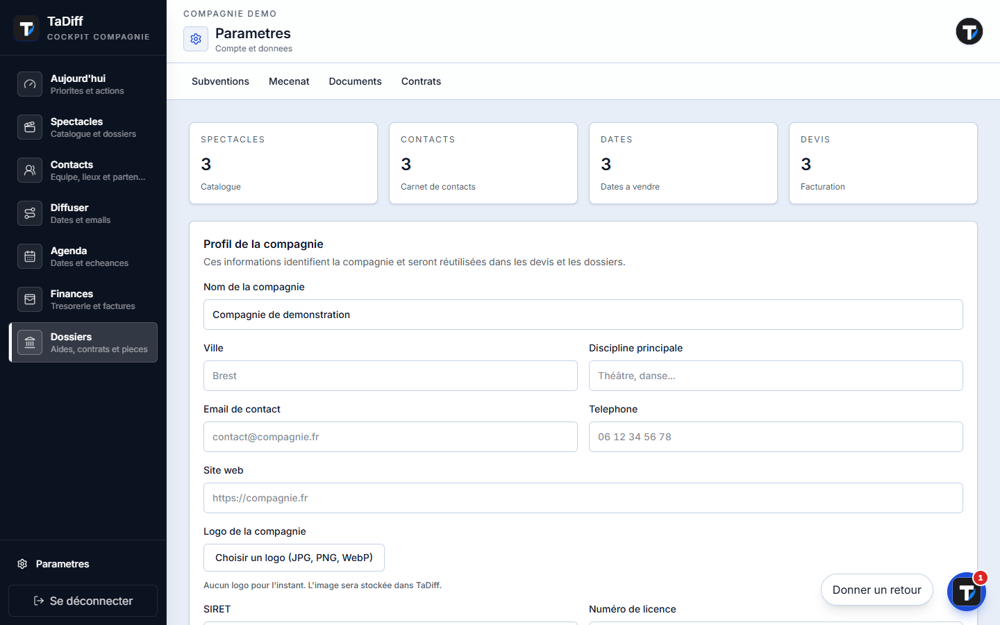
Réglages utiles
Identité de la compagnie, documents permanents, équipe, rôles et accès.
Gestion
- Compléter le profil
- Inviter les membres
- Attribuer les droits adaptés
Plateforme
Une console superadmin séparée pilote les comptes, contenus globaux, quotas William et paramètres légaux.
Conclusion
Un produit déjà cohérent, à éprouver avec les compagnies
Le cockpit, les spectacles, les dossiers, les contacts, la diffusion, les emails, les aides et les finances forment un même parcours.
Le vocabulaire, l’ordre des priorités et la simplicité réelle avec des utilisateurs qui ne veulent pas « faire de l’administration ».
Stabiliser les migrations, tester le parcours complet et observer dix compagnies bêta sans leur expliquer chaque écran.
TaDiff doit devenir l’endroit où une compagnie comprend sa situation et agit, sans ressentir la complexité derrière.